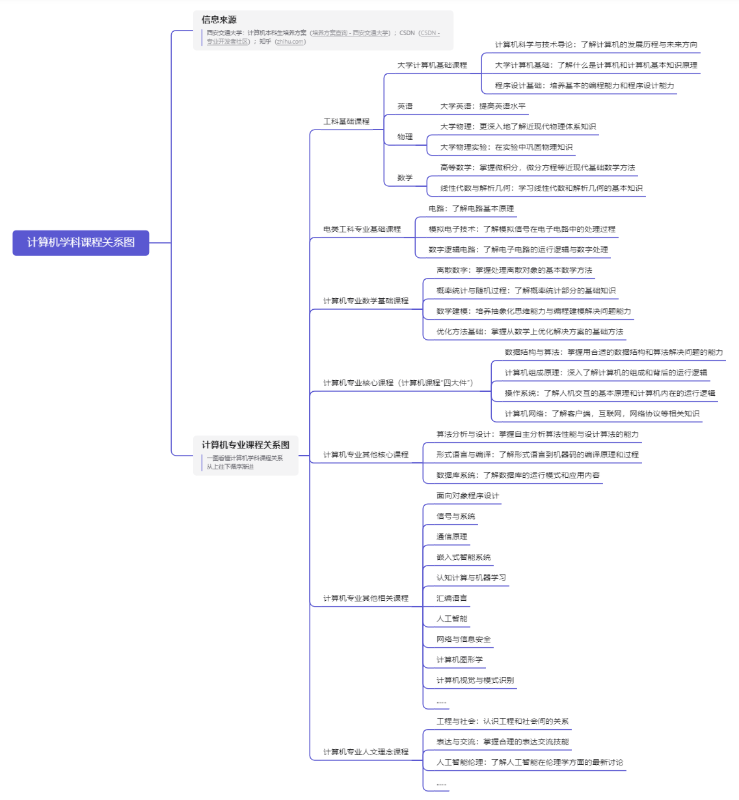

计算机科学技术导论：大作业网页
Edit by:计算机001 李晨峰
计算机学科课程关系图
计算机课程参考资料
我对计算机专业的认识
我的学业规划
课程关系图
点击查看图片详细内容

参考资料
CSDN：专业开发者社区
https://www.csdn.net/
百度一下，解决你99%的问题
https://www.baidu.com/
博客园：开发者的网上家园
https://www.cnblogs.com/
bilibili：从干货到摸鱼应有尽有
https://www.bilibili.com/
菜鸟教程：多种编程语言的自主学习平台
https://www.runoob.com/
中国大学MOOC：好的大学，没有围墙
https://www.icourse163.org/
专业认识
计算机无疑是20世纪与21世纪最有意义的发明创造之一，它深刻地改变了我们生活的方方面面，从无数你甚至意想不到的地方改变着我们的生活。
计算机专业作为研究和应用计算机科学技术的专业学科，它的意义在于培养出更多能用计算机改变世界，服务社会，创造美好未来的人才。就像腾
讯的口号“科技向善”一样，我坚信计算机是能改变世界，让世界上更多美好发生的学科。
计算机专业是一门很辛苦，很累，要求知识面很广和混合运用的学科，我们不仅要学习计算机本身相关的内容，还要学习数学，英语等学科，这些
学科在未来的学习工作中都是不可缺少的。在我看来，如果有一颗对计算机的好奇心，有对写代码解决问题的热情，计算机专业学习中的困难都不
算什么。计算机是一种工具，一种发挥人的创造力和解决问题的能力的工具，我们计算机专业的学生，在学习过程中学习的就是用好这种工具的能
力与学习使用工具的技巧。对我来说计算机专业的一切辛苦与疲惫，与我在看到自己的代码变成解决问题的方法，展现内容的平台的那一刻所收获
的快乐和成就感相比，都不算什么。只要有一颗满怀梦想与热情的心，我相信计算机专业的学习一定能成为我人生历程中最重要的一段记忆。
学业规划
大一：打好工科基础课基础，培养一些关于编程方面的兴趣，了解计算机专业的发展历史和专业前景
大二：认真学习学校计算机专业基础课，为以后学期更深层次的专业核心课做准备。同时在网上自主学习其他相关内容
大三：认真学习学习计算机专业核心课，学习更多的计算机知识，进一步学习编程技术，为未来打下坚实基础
大四：准备考研，出国等相关事宜，同时完成本科计算机专业毕业设计，巩固本科学习所学内容
研究生：尽量选择出国深造，在国外学习更前沿的技术，感受异国的学习编程氛围
未完待续......